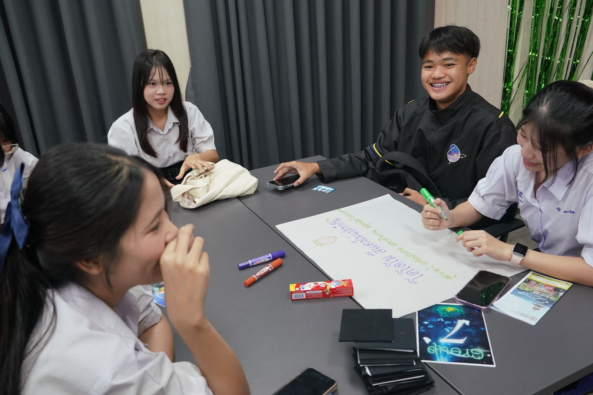

ต้นปีการศึกษา
Orientation & Welcome Week
ปฐมนิเทศและสัปดาห์ต้อนรับ
ปฐมนิเทศนิสิตใหม่ ครอบคลุมทุกหลักสูตร

Beyond the Classroom
ชีวิตนิสิต
เรียนรู้ เชื่อมโยง และเติบโต — ประสบการณ์ของนิสิต BAS SWU นอกห้องบรรยาย
Student Activities
กิจกรรมนิสิต
ไฮไลต์จากองค์กรนิสิตและกิจกรรมระดับคณะตลอดทั้งปี
ปฐมนิเทศและสัปดาห์ต้อนรับ
ปฐมนิเทศนิสิตใหม่ ครอบคลุมทุกหลักสูตร

การแข่งขันเคสธุรกิจ
ทีมข้ามหลักสูตรแข่งขันแก้โจทย์ธุรกิจจริง และนำทฤษฎีไปใช้ในโปรเจกต์ประยุกต์

กิจกรรมเพื่อสังคมและความยั่งยืน
โครงการร่วมกับชุมชนและ Green Office เช่น Asok Model
Clubs & Societies
สโมสรนิสิตและชมรม
องค์กรที่บริหารโดยนิสิตเปิดพื้นที่ให้ทุกคนได้เป็นผู้นำ — ตั้งแต่การจัดงานอีเวนต์ไปจนถึงการเป็นพี่เลี้ยงรุ่นน้อง ชมรมเปิดรับสมาชิกทุกภาคการศึกษา
ติดตามสโมสรนิสิต BAS (เปิดในแท็บใหม่)สโมสรนิสิตคณะบริหารธุรกิจเพื่อสังคม ดูแลกิจกรรมและเป็นตัวแทนนิสิต
ชมรมที่บริหารโดยนิสิต เปิดรับสมาชิกทุกภาคการศึกษาในงาน Club Fair
รุ่นพี่เป็นพี่เลี้ยงรุ่นน้อง ช่วยปรับตัวทั้งด้านการเรียนและชีวิตในมหาวิทยาลัย
Campus Facilities
สิ่งอำนวยความสะดวก
จากพื้นที่ทำงานร่วมกันในอาคารนวัตกรรม ไปจนถึงย่านสุขุมวิทโดยรอบ
พื้นที่ Co-working
ที่นั่งสบาย อินเทอร์เน็ตความเร็วสูง และโซนสำหรับทำงานเดี่ยวหรือกลุ่ม
หอสมุดกลาง
โซนอ่านหนังสือเงียบ และห้องกลุ่มปรับอากาศพร้อม Wi-Fi
โซนบอร์ดเกม
พื้นที่พบปะในหอสมุด สำหรับเล่นเกมและพักผ่อนระหว่างคาบ
โรงอาหาร
อาหารไทยราคาย่อมเยา เปิดช่วงเช้าถึงบ่าย วันจันทร์–ศุกร์